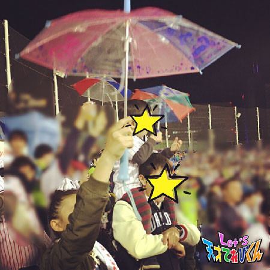

<<2016年4月 | トップページ | 2016年6月>>
2016年5月
初めて○○しました！［皆川寧々］
みっなさ～ん、
こんばんは、＊寧々＊です (｡・u・｡)/☆
この前、つーじーと一緒にタイフェスを
のぞきに行きました！！
たくさん屋台が並んでいて、人もいっぱいで
お祭りの雰囲気全開でテンションが上がりました↑↑↑
つーじーはマンゴー、寧々はストロベリーのデザートを食べました！
甘くてす～ごくおいしかったですっ \(′u｀*)/
さてさて本日のお題ですが。。。
「 初めて○○しました！ 」
寧々はコレ！！
ウォールクライミングに初挑戦しました！
最初は「 簡単そうだな～ 」とか思ってたんですけど・・・
思ったより簡単じゃなくて・・・ …>_<…
あっ！とくにコレ！
「 ホールド 」というカラフルなデコボコしたものをつかんで、
うんていのように移動するというのを何回もやったのですが、
あとちょっとというところで落ちてしまって・・・
あ～悔しい！
結局、タイムオーバーでした (T ^ T)
ウォールクライミング、すっごくハマりそうです！
静岡でのミッションのツリークライミングを思い出しながら、
おサルさんみたいに移動できるようになりたいなぁ笑
それではみなさん、
＊寧々＊でした～
投稿者:皆川寧々 | 投稿時間:18時45分 | カテゴリ：てれび戦士 | 固定リンク
初めて○○しました！［滝澤翼］
こんにちは！
瀧澤翼です！
この前、千葉県の九十九里浜へ行ってきました＼(^o^)／
その日は真夏のような暑さでしたが、
浜辺に行くと海風が気持ちよくて思わずジャンプしちゃいました！！
夏がやってくる～って感じ！
早く夏休みにならないかな？(￣▽￣)
待ちどおしいです。
さぁ、今回のテーマは
「 初めて○○しました！ 」です。
この間、お母さんが昔の写真を整理していたら
僕の記憶にない小さい頃の写真を見せてくれました。
どこへ行ったときの写真かを聞いてみると、
「 翼が初めて海外旅行へ行ったときの写真だよ。」と言われました。
おじいちゃんおばあちゃん、いとこと一緒に
グアム旅行に行ったときの写真です。
僕が１歳だったときの旅行だったので
全く記憶がないんです！！（ 当然ですが笑 ）
旅行の思い出話を聞いてみると、
プールではお父さんが僕を持ち上げてすべり台をすべってくれましたが、
海へ入ろうとすると怖くて泣きだしてしまい、入らなかったそうです (#^.^#)
今では海で遊ぶことが大好きなので
海外の海を思う存分満喫したいです ☆*:.｡. o(≧▽≦)o .｡.:*☆
そのためには英語を勉強しなきゃ p(^_^)q
Let's travel （ 旅行 ）！！
投稿者:瀧澤翼 | 投稿時間:18時45分 | カテゴリ：てれび戦士 | 固定リンク
初めて○○しました！［久保みのり］
みなさん。こんにちは (^o^)/
みのりです！！
大型連休は、なにをしてすごしましたか。
わたしは、お友だちとバーベキューをしたり、
公園でキャッチボールをしたり、ナゴヤドームにドラゴンズを応えんに行ったり、
おばあちゃんのおうちに行ったり、
ハーハーハーハー（←いっぱいあって息がきれそう）
「 しぶやDEどーも2016 」で遊んだり、
だーいすきなぎょうざをもりりっと食べたりしました。
うぃーーっぱい楽しくすごせました^ ^
＊.｡.:*・ﾟ ＊.｡.:*・ﾟ ＊.｡.:*・ﾟ ＊.｡.:*・ﾟ ＊.｡.:
そんな中で今回のテーマ、
「 初めて○○しました！ 」
うーん。難しいなぁ・・・
うーん。あっ！ありました！！
ついこないだ、
「 初めてボウリングで初球ストライクをだしました！！ 」
感げき～～～
しょうこ写真です ^ ^
このときは最後まで調子がよくて、合計137本もたおしました^ ^
キッズレーンでガターがなかったのはひみつだけどね (-｡-;
またボウリングに行きたいな♪
投稿者:久保みのり | 投稿時間:18時45分 | カテゴリ：てれび戦士 | 固定リンク
なくてはならないモノ［柿澤仁誠］
こんにちは (^_^)
柿澤仁誠です！
今回でブログを書くのが３回目！
ブログを書くのがどんどん楽しくなってきました！！
さぁ、今回のテーマは↓↓↓↓
「 なくてはならないモノ 」！
なくてはならないモノは、たくさんありますが、
僕のなくてはならないモノは、「 ヨーグルト 」です！！！！
ヨーグルトは、僕が元気でいられるモトです (^^)/
もともと冬のカゼよぼうのために、
食べ始めました。
今では、ねる前に食べ続けています。
そのまま食べたり、ジャムと食べたり、さとうをかけたり、
いろいろな食べかたで食べてます。
ヨーグルトパワーで、
毎日 ＼(^o^)／ 元気全開です！
投稿者:柿澤仁誠 | 投稿時間:18時54分 | カテゴリ：てれび戦士 | 固定リンク
なくてはならないモノ［小澤竜心］
こんにちは！竜心です。
ぼくの『 なくてはならないモノ 』、
それは・・・【 バリカン 】です！！
ぼくは、勝負のときや大事な日の前に、
必ずバリカンで頭をそってもらいます。
頭をそると、さっぱりして、
勇気とやる気がわいてきます♪ヽ(´▽｀)/
そってくれるのは、いつもお父さんです。
バリカンには、髪の長さを調節できる
刃がいくつかありますが、
ぼくは、１ミリの刃を使っています。
バリカンは２台、持っています。
『 バリカン１号 』と『 ２号 』です。
もしも、そっている途中で、
バリカン１号の調子が悪くなっても、
２号がいるから大丈夫なのです～ d(⌒ー⌒)！
いつか、マイバリカンで、
自分で頭をそってみたいです。
正面はできそうだけど、
後ろはむずかしそうなので、修行しないと！
そりたての頭は、自分でさわっても
とても気持ちいいです。
友だちには、「 ご利益（ りやく ）がありますように～。」
と、さわられますが、
いいことがあるのかな～・・・f(^_^;)
でも、みんなに頭をなでてもらえて、
とてもうれしいです。
大人になっても、
バリカンを大切に使っていきたいです o(^o^)o
投稿者:小澤竜心 | 投稿時間:18時45分 | カテゴリ：てれび戦士 | 固定リンク
なくてはならないモノ［辻晴仁］
おはこんばんちは！！
つじはるとです（＾◇＾）
春の大型連休に、愛知のおじいちゃんとおばあちゃんの家に行ってきました。
おじいちゃんの畑でとれる玉ねぎはサイコー！
ずっしりしていて、すごく大きい！
それから、川に生きものをつかまえにも行きました♪
イトトンボがいたよ～（＾＾）
ほんとうはメダカとか魚もつかまえたかったんだけどなー。
いなかったよ～ざんねん。。
さて、今回のテーマは、
「 なくてはならないモノ 」です。
ぼくの「 なくてはならないモノ 」は、
ホワイトライオンのぬいぐるみです☆
ねるときに、そのぬいぐるみがないと、
ぐっすりねむれなくて、
次の朝、すごくねむくなってしまうからです (+o+)
このぬいぐるみは、ようちえんのとき、
お父さんとサーカスに行って買ってもらったもの！
一目見てすごく気に入り、それからずっといっしょにねていて、
なくてはならないモノになりました。
さわりごこちがふわふわさらさらしていて、きもちよくて、
もっていると、とてもおちつくんですよ (＾＾)
かわいいでしょ？

では、またね (^^)/
投稿者:辻晴仁 | 投稿時間:18時45分 | カテゴリ：てれび戦士 | 固定リンク
なくてはならないモノ［桐畑カレン］
こんにちは。
カレンです(*^^*)
暑い！と思う日が増えてきましたね～。
最近はお友だちと水風船を使った鬼ごっこなどをして遊んでいます。
とーっても楽しいです♪
水がバシャーってかかっても、あっという間にかわいちゃう季節が待ちどおしいな。
＊.｡.:*・ﾟ ＊.｡.:*・ﾟ ＊.｡.:*・＊.
この前、ボーっとしてたときに、
私は１日何してすごしてるんだろうと考えてみたんですよ。
そうしたら、１日の３分の１を学校ですごしていることに気がつきました。
すごい！！
ということで！
私の学校生活の中で、
「 なくてはならないモノ 」を紹介したいと思います。
それは
☆ トントンすぎず、まるみすぎない鉛筆 ☆
私のこだわりです (’-’*)
学校のお友だちはトントンな鉛筆が書きやすいって言うけど、
私はトントンより少し先がまるくなっているのがいいんです ^^
書くときの力が強いから、
トントンの鉛筆だとすぐにポキポキおれてしまうのです (T^T)
さあ、今日はどの鉛筆けずりで
ベストな書き心地にけずろうかな・・・ふふふ・・・(-∀-)
だから、鉛筆けずりがたくさんあります(^w^)
あれ、ということは( -_・)?
トントンすぎず、まるみすぎない鉛筆がなくてはならないモノ？
それとも鉛筆けずりがなくてはならないモノ？
頭の中がぐるぐるぐる～
分からなくなってきたので、今回はこのへんで( ´∀`)/~~
投稿者:桐畑カレン | 投稿時間:18時45分 | カテゴリ：てれび戦士 | 固定リンク
なくてはならないモノ［皆川寧々］
みっなさ～ん、
こんばんわ、＊寧々＊です (｡・u・｡)/☆
この前、
神宮球場にプロ野球の試合観戦へ行きました。
お友だちが寧々のために応援用のうちわを
手作りしてくれました☆
さて、今回のテーマは
【 なくてはならないモノ 】
この流れできたら、そうです！
野球観戦の必須アイテム！！
スワローズと言えば・・・
かさです！！！！
得点が入ったときには、
急いでかさを開いて大声で「 東京音頭（ おんど ）」を歌いま～す (*^O^*)／
弱い雨のときはちょとした雨具にも。
チームによって応援の仕方やグッズが違うので、
７回の応援タイムは見ていててすごく楽しいです！
今年もたくさん試合観戦に
行きたいと思いました (｡・u・｡)ｙ

それではみなさん、
＊寧々＊でした～
投稿者:皆川寧々 | 投稿時間:18時45分 | カテゴリ：てれび戦士 | 固定リンク
なくてはならないモノ［林武尊］
こんにちは、林武尊です。
今回のテーマは、僕になくてはならないものです！
みなさんは、なんだかわかりますか？
それはメガネ！
僕は小学校３年のころから、視力が悪くなって
メガネをかけました。
それからはもう、なくてはならない存在です。
今は、お風呂と寝るとき以外は、ずっと一緒でーす！
もうひとつのなくてはならないもの。
それは・・・
家族です！！
もうこれには理由がありません！！
みなさんもそうですよねー
家族は、お金よりも自分よりも大切です。
それを考えると、感謝を忘れず親孝行をしたいと思います (o^^o)
みなさんの「 なくてはならないモノ 」はなんですか？
投稿者:林武尊 | 投稿時間:18時54分 | カテゴリ：てれび戦士 | 固定リンク
なくてはならないモノ［稲垣芽生］
こんにちは～☆
最近たい焼きを食べた
今日も元気なめいぼうです！
新４年生ではクラス替えはないので
もっともっとクラスのみんなと仲良くなれて
毎日、笑ってます。
では、今回のテーマ「 なくてはならないモノ 」
家族や友達は絶対ですが
物だと・・・
自分でいろいろ書いたノートです。
何が書いてあるか、特別に教えちゃいます！
まず、手話のことが書いてあります。
手話の本を読んだり動画を見て勉強したことが書いてあります。
あと、好きなお笑い芸人さんとか
めいぼうの好きな食べものとか好きなものとか書いてあります。
だれも見ないから、いろいろ書いています。
みなさんもそういうノートってありますか？
あともう１つ、なくてはならないものがあります。
それは友達や家族からもらった手紙です。
もらうとき、すごくうれしくて
何日かたって読み返すと楽しくて、
みんないろんなことを書いてくれます。
最後に芽生ちゃん大好きだよ～って書いてくれていて
それがまたうれしくて、
芽生も大好きだよー！って思います。
本当にありがとう！
もらった手紙は大きなファイルに大切にしまっていて
宝物です☆

投稿者:稲垣芽生 | 投稿時間:18時45分 | カテゴリ：てれび戦士 | 固定リンク
なくてはならないモノ［瀧澤翼］
こんにちは！
最近少しずつ暑くなってきましたね～。
運動すると、すぐに汗でびっしょりになる瀧澤翼です。
実は最近マイブームができました！
そのマイブームとは・・・きくらげです！
あのコリコリとした食感と、
どの料理とも相性のいいところが魅力なのです！
今、僕の好きな食べものはホタテときくらげが同率の１位なので、
きくらげブームなのです！！
さぁ、今回のテーマは「 なくてはならないモノ 」ですね。
最近、学校から疲れて帰ってくると
僕をいやしてくれるモノがあります。
それは・・・
久しぶりの登場、愛犬ポッキーです！！
もちろんポッキーは家族の一員なのですが、
僕の疲れをいやしてくれる必要不可欠な存在です！
これからも僕をいやしてくださいね！
Let's ポッキー＆きくらげ！！
投稿者:瀧澤翼 | 投稿時間:18時45分 | カテゴリ：てれび戦士 | 固定リンク
なくてはならないモノ［久保みのり］
みなさん。こんにちは *\(^o^)/
みのりです！
だんだん暑くなってきましたね～。
わたしは元気もりもり、食よくもりもりです ^ ^
さい近のわたしは、きゅう食の〈 おかわりジャンケン 〉でよく勝っています！！
いちばんうれしかったのは、残り３コの『 チョコバナナクレープ 』をゲットできたこと♪
人気のデザートだから、15人くらいでジャンケンして勝てたんです。
強いでしょ！？
よっしゃ～！ってなりました（≧∇≦）
＊.｡.:*・ﾟ ＊.｡.:*・ﾟ ＊.｡.:*・ﾟ ＊.｡.:*・ﾟ ＊.｡.
さて。
今回のテーマ「 なくてはならないモノ 」
さい初に思いうかんだのは、家族。
お父さんお母さんお姉ちゃん弟、両方のおじいちゃんおばあちゃん。
いつもわたしの近くにいて見守ってくれています！
でも今回みなさんにしょうかいするのは
とっても大切にしている、くまのぬいぐるみで す^ ^
わたしは、ぬいぐるみが大すきで50ひきくらい持っています。
その中でもいちばん大切にしているのが
ようち園の年長のとき、ある目ひょうをたっせいしたときに買ってもらった、
大きくて真っ白でかわいいくまさんです！！
いつもこの子といっしょにねています^ ^
フワフワで自分のにおいがして気持ちいい～んです。

でも、こんなに大切にしているのに名前がありません笑
だれかいい名前をつけてくださーい！！
投稿者:久保みのり | 投稿時間:18時45分 | カテゴリ：てれび戦士 | 固定リンク
なくてはならないモノ［原田明莉］
こんにっちわ
明莉です！
つい最近、誕生日を迎えました！
たくさんの人に祝ってもらえて本当に幸せでした！
本当に本当に本当にうれしかったです！
ではでは
本題に入ります
今回のテーマは
「 なくてはならないモノ 」
です！
いやーー
《 友達・家族 》
も
本当になくてはならないモノなんですよねーー
ですが
いっかい似たようなことを記事に書いたことがあるので今回は
《 気持ち 》
が
私にとってなくてはならないモノとして書きたいと思います！
どういうことかというと
気持ちでなんとかなるときって
たっっっくさんあるんです！
例えばなにか頑張らなくちゃいけないとき！
「 試合で足の皮がむけて痛い！ 」
「 急にお腹が痛い！ 」
痛くないと思えば痛くないんです！
それで集中できたことがあります！
このあいだも空手の大会中、
お腹が痛くなっちゃって
終わったあとは歩くのもつらいほどの痛さでした！
決勝前もひどくて
それでもずーっと
気持ち気持ち！気持ち気持ち！
て思い続けていました！
結果、実力を発揮できて勝てたということもありました！
本当にメンタル面が４、５年生のときまですごい弱かったんです！
先輩によくメンタルきたえられたなぁ ^^;
でもそれから成績も伸びていった気がします！
あと！
シャトルランとか
つらい・・・
て思ったときも
つらくない！
て思えば、意外といけちゃったりするんです！
このあいだ体力テストでも気持ちで頑張ることができました！
スポーツ関係ではないけど
募金をするときとか
プレゼントを渡すときとか
なにがいちばん大事かって
やっぱり
《 気持ち 》
だと私は思っています！
あ！
この前、空手の形（ かた ）の練習をしていたときに
跳べる！
て思って跳んだときの写真です！
やっぱ気持ちだっっっ！
私にとってなくてはならないモノとは
《 気持ち 》
でした！！！
これからも自分にとってなくてはならないモノとして
大切にしていきたいと思います！
みなさんの、なくてはならないものとはなんですかー？
投稿者:原田明莉 | 投稿時間:18時45分 | カテゴリ：てれび戦士 | 固定リンク
なくてはならないモノ［胡内奏芽］
こんにちわ！
胡内です。
３回目のブログです。
前回より上手に書けるかな・・・。
今回のテーマは【 なくてはならないモノ 】
今、ちょうどそうなんですけど、
ブログ上手に書けるかな。
とか、
体育での50メートル走で良いタイム出せるかな。
とか。
いつも不安なときに思い浮かべるのは家族です。
お父さんやお母さんやおばあちゃんの応援。
いつも僕を
『 がんばって！ 』
『 おうえんしてるよ！ 』
『 奏芽なら大丈夫！ 』
と応援してくれます。
家族の応援がパワーをくれます。
よしやるぞ！
と思います。
いつも応援してくれる家族は
僕のパワーのみなもと。
なくてはならないものです。
もちろん、お友達や先生もパワーのみなもと！！
これからも、頑張ります！！
以上、胡内でした。
前回より上手にかけたかな・・・。
投稿者:胡内奏芽 | 投稿時間:18時54分 | カテゴリ：てれび戦士 | 固定リンク
なくてはならないモノ［飯島緋梨］
こんにちは！
飯島緋梨です
緋梨の中学校では
もうすぐ体育祭があります
でもでも小学生のときの運動会とは
内容がちょっぴり変わるみたいなので
なんだか楽しみでもあり不安でもあります
とにかく頑張ります！！
さてさて、
今回のお題は
「 なくてはならないモノ 」
緋梨にとって、なくてはならないものはいろいろあるけど
その中でも！なくてはならないものは・・・
【 大好きなテレビです！！ 】
バラエティー番組が好きでよく見ます
いろいろなことにチャレンジしたり
新しい発見があったり
芸人さんの話が面白かったり
とにかく元気をもらえます (*^_^*)
なので私も一生懸命、全力で頑張ることで
テレビの前の誰かに共感してもらえたり
喜んでもらえたらうれしいな！！
投稿者:飯島緋梨 | 投稿時間:18時45分 | カテゴリ：てれび戦士 | 固定リンク
なくてはならないモノ［黒川桃花］
こんにちは！
ぬいぐるみだーいすき黒川桃花です！
今回のお題は「 なくてはならないモノ 」です！
私のなくてはならないものは、
「 ぞうさん 」です！
ぞうさんっていうのは、
私が生まれたときに、ママとパパがプレゼントしてくれたぬいぐるみです！
小さいころは朝から夜までずーっといっしょでした。
私が階段からおっこちたときも
ぞうさんの頭が私の頭の下に入って、
大きなけがをしないですんだこともありました。
今でもそのことが記憶に残っています！
そんな命の恩人？でもあるぞうさんが大好きです！
ぞうさんは私にとって、なくてはならないものです！
みなさんにも、なくてはならないものは、ありますか？
これからも、ぞうさんを大事にしていきたいです。
今度ぞうさんのマフラーをつくってあげようかな～
投稿者:黒川桃花 | 投稿時間:18時45分 | カテゴリ：てれび戦士 | 固定リンク
去年より成長したこと！［辻晴仁］
おはようございます！こんにちは！！こんばんは！！！
なん時に読んでくれているかわからないので、全部言ってみました～～
辻※晴仁（ つじはると ）です (o^―^o)ﾆｺ ※一点しんにょう
春休みに、九州から４さいのいとこが遊びにきました♪
桜の花びらを投げたら、おおはしゃぎしてかわいかったよ (´艸｀*)
・・・・・・・・・・・・・・・・・
さて、今回のテーマは、
「 去年より成長したこと！ 」です。
ぼくは、ひとりで、電車に乗れるようになりました！！
まず、家から駅まで歩いて行って、改札をとおり、乗り場へ行きます。
そして、売店で大好きなグミを買ってから、その売店前の車両に乗り、
お母さんとまち合わせている駅で電車をおります。
初めてひとりで乗ったときは、人ごみでおりる駅のかんばんが見えなくて、
電車の中でおろおろキョロキョロしていました。
お母さんが見つけてよんでくれたので、ぎりぎりでおりられましたが、
まさにききいっぱつ！でした (>_<)
２回目は、そのしっぱいを生かして、
電車の中の電光けいじばんを乗ってからおりるまで、
30分間ジーーーーーーーーーと見続けて、、、
やっとぶじおりられました (*_*)
そんなぼくでしたが、今ではすっかりなれて、
「 まもなく○○駅でーす 」のアナウンスを聞いたり、
電光けいじばんをちらっと時々見たりしながら、
気楽に乗っておりられるようになりました v(^Д^)v ｲｴｲ
ぼくの電車のICカード！ これでピッてします (´∀｀)∩--pi
では、またね ＾＾
投稿者:辻晴仁 | 投稿時間:18時45分 | カテゴリ：てれび戦士 | 固定リンク
去年より成長したこと！［桐畑カレン］
こんにちは。
カレンです (*^^*)
春はいろんなところに桜を見に行ってきました。
お家の近くや、広ーい公園、夜桜など、どこもとってもきれいでした (*´∀｀)
＊.｡.:*・ﾟ ＊.｡.:*・ﾟ ＊.｡.:*・ﾟ
『 去年より成長したこと！ 』の中で、
うれしかったことを、ランキング形式でお話したいと思います ^^
デレレン
第３位 体が大きくなったこと☆
つい最近、お気に入りの服を着たら、
｢ ビリッ・・・ビリビリ ｣と音が。
い、いやな予感 (￣∇￣;)
なんと破れてしまったのです。
｢ 身長が伸びたんだね！横にも伸びたね～。大きくなったね♪｣
とお母さんに言われました。
お気に入りの服が破れたのは悲しかったけど、
体が大きくなったことはうれしいです♪
デレレン
第２位 自転車でまっすぐな道を走れるようになったこと☆
平らでまっすぐな道を自転車で走れるようになりました！！
でも、まだ坂道や複雑なくねくね道は走れません (><)
どんな道も走れるようになりたいです！！
デレレン
第１位 マット運動ができるようになったこと☆
５年生のときは、
｢ マット運動なんてできないよ～・°°・(＞_＜)・°°・。｣
と困っていたけど、友達とたくさん練習したら、
クルリンと前転ができるようになりました。
そのあとには、開脚前転もできるようになりました ^^
もしかしたら運動神経がよくなっているかも・・・( ´∀｀)
ちょっぴり自信がつきました。
今は後転の練習中です！
番外編ですが、私も６年生になり
１年生のお世話をすることになりました (*^▽^*)
それも２人もです♪
私もしてもらってきたことをお返しできるように、
１年生が楽しく学校生活を送れるお手伝いができたらなと思っています。
こんな風に思えるようになったのも成長したことかな。
今年もたくさんのことにチャレンジして、
さらにいろいろな部分で成長していきたいです (*^▽^*)
投稿者:桐畑カレン | 投稿時間:18時45分 | カテゴリ：てれび戦士 | 固定リンク
去年より成長したこと！［稲垣芽生］
こんにちは～！
めいの名前、覚えてもらえたかな？
いつか覚えてほしいです！
この前、私はあるものを求め、お母さんと妹と行ってきました・・・
あるものとは・・・妹の大好物のわたあめっ。
すごく大きいわたあめを食べに行きました☆
うわぁ！大きい～
どうでしょう？ 大きさが伝わらない。
さて本題に入ります！
今回は「 去年より成長したこと！ 」ですね！
う～ん・・・去年より成長したこと・・・”(-“”-)”
え～と？
あっ！ １人でかみの毛を結べるようになったことです。
お友達のかみの毛を結ぶことはできるのに
自分のかみの毛を結べなくて・・・
鏡の前で何度も何度も練習しました！
１か月くらい練習して
やっと自分の髪の毛を１つや２つに結べるようになりました (^^♪（やった～！！）
お母さんにも聞いてみました。
「うーん・・・ちょっとお姉さんぽくなってきたかな？」だって！（わ～い☆）
また、来年はもっともっと成長して
自信をもって「 コレです！ 」といえるように
全力で頑張ります！
投稿者:稲垣芽生 | 投稿時間:18時54分 | カテゴリ：てれび戦士 | 固定リンク
去年より成長したこと！［小澤竜心］
こんにちは！竜心です。
４月は、お花見に行きました。
ピンクの桜や白い桜、赤い桜など、
いろんな桜をたくさん見ることができました。
他にも、いろんなお花を見たり、
みんなでボール遊びをしたりして、
とっても楽しかったです (*≧∀≦*)
さて、『 去年より成長したこと！ 』のお話です。
６年生になったぼくは、
今、毎日学校に行くのが楽しみです♪♪
なぜなら・・・・・・
朝や休み時間に、
１年生の教室に行ってお手伝いをしたり、
校庭で一緒に遊んだり、
いろいろおしゃべりして、仲良くなれるからです。
その中でも一番楽しみで、去年より成長したことが、
【 登校班 】です♪ヽ(´▽｀)/
朝から、おはよ～！！ってあいさつをして、
１年生とおしゃべりしながら歩けるのが、
すっごく楽しいーーー♪♪
しかも、今年は、
登校班の班長になったので、
ますますやる気が出て、
自分でも、成長しているなぁ～と思います。
早起きは苦手だけど、毎日ワクワクしています！
この調子で、これからもがんばります ((o(^∇^)o))
投稿者:小澤竜心 | 投稿時間:18時45分 | カテゴリ：てれび戦士 | 固定リンク
去年より成長したこと！［皆川寧々］
みなさん、こんばんは！
春からてれび戦士の仲間入りをしました。
皆川寧々（ みなかわねね ）です (*^U^*)/
好きな言葉は、
「 おいし～いぃぃ 」と、
「 眠い・・・ (-_-)Zzz 」です！！
じゃなくて、今日のお題は・・・
『 去年より成長したこと！ 』
この春、
妹が新小学１年生になりました w(*^U^*)wパチパチ
ピカピカの妹のランドセルと、
自分の年季の入ったランドセルを見くらべると
「 わたしも、成長したなぁ～・°(p°n°q)°・」
っていう気持ちになります。
去年よりも教科書の量が増え、
ランドセルが重たくなった・・・(-n-；)
ってのも、ぐぅ～んと成長した気分になります！
あっ！この本、何だかわかりますか？？
東京オリンピックにむけての勉強です！
東京オリンピックでは、大好きなサムライジャパンの野球が見たいです！
大会競技に選ばれるように
心の中で祈っています (｡>人<｡)
あと、野球と同じくらい好きなバスケもあるので
東京オリンピック、今からすごく楽しみです！！
みなさんはどの競技が楽しみですか？
今度教えてくださいね！
ではでは＊寧々＊でした～
投稿者:皆川寧々 | 投稿時間:18時45分 | カテゴリ：てれび戦士 | 固定リンク
去年より成長したこと！［瀧澤翼］
こんにちは～！
最近学校でクラス替えがありました！
２年F組の瀧澤翼です！
どんなクラスになるのか楽しみだな～！！
さぁ、今回のテーマは
「 去年より成長したこと！ 」かぁ～。
まず、去年より身長が約10センチほど伸びたことは
以前のブログでいいましたよね。
次に成長したことは、
パイナップルが少しずつ食べられるようになったことです！
もともと僕はパイナップルが大の苦手でした。
ですが、僕の姉が大のパイナップル好きで
僕にオススメしてきたので勇気を出して食べてみました！
そしたら、意外に食べられたんです！
これからはどんどん苦手な食べものを克服していきたいです！
それでは今回はここまで！
Let's 成長！！
投稿者:瀧澤翼 | 投稿時間:18時45分 | カテゴリ：てれび戦士 | 固定リンク
ページの一番上へ▲